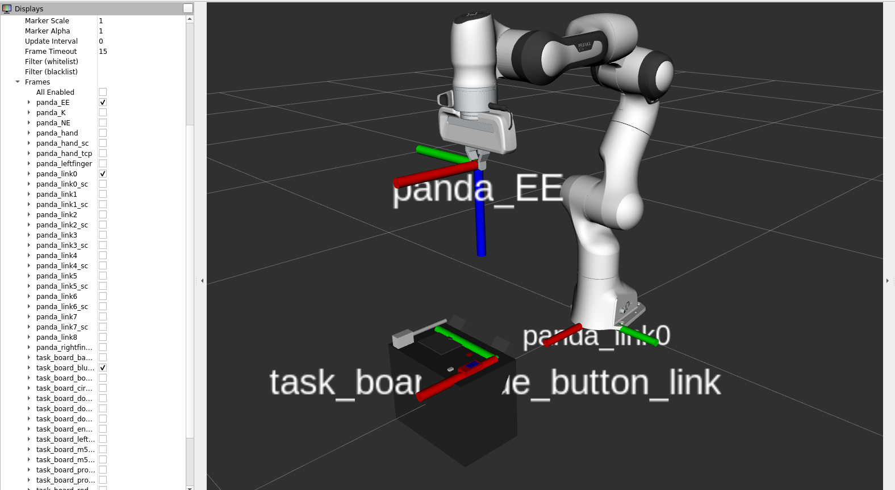
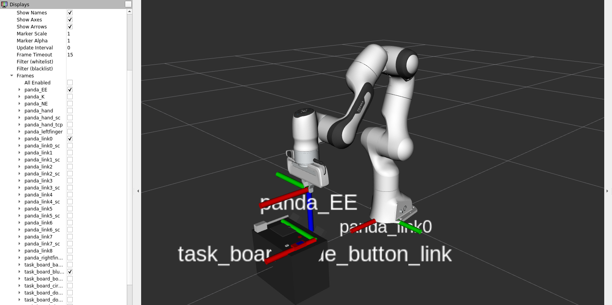

Surcharge de la classe “panda_robothon”
Méthodes modifiées
Méthode “home” permettant au robot d’aller à un “z” donné avec x,y = 0
class Panda_R(Panda):
def __init__(self):
super().__init__()
self.listener = tf.TransformListener()
# Méthode permettant de placer l'effecteur final à une hauteur de 0.25m
# par défaut (mais ci-dessous, saisir dans le terminal "home" le place à 0.5m)
def home(self, z=0.25):
pos_array = np.array([0.4, 0, z])
quat = np.quaternion(0, 1, 0, 0)
goal = array_quat_2_pose(pos_array, quat)
goal.header.seq = 1
goal.header.stamp = rospy.Time.now()
ns_msg = [0, 0, 0, -2.4, 0, 2.4, 0]
self.go_to_pose(goal)
self.set_configuration(ns_msg)
self.set_K.update_configuration({"nullspace_stiffness":10})
rospy.sleep(rospy.Duration(secs=1))
self.set_K.update_configuration({"nullspace_stiffness":0})
|

|
|---|
Fig. 25 Positionnement de l’effecteur final à 0.5m
Dans le terminal, on aura à saisir "home" après "Position :"
$ Position : home
|

|
|---|
Fig. 26 Positionnement de l’effecteur final à 0.25m
Dans le terminal, on aura à saisir "home2" après "Position :"
$ Position : home2
Méthodes utilisées pour le déplacement de l’effecteur final
La méthode “
get_tf_transform(self, parent, child)” permet d’obtenir la transformation entre les TFsparentet la TFchild.La méthode “
get_transform_pose(self, origin, target, pose=None)” transforme une “pose” (composée d’une orientation et d’une position selon les 3 axes x, y et z) d’un repère “origin” à un repère ou uneframedite “cible”.La méthode “
get_to_pose_EE(self)” permet d’obtenir la pose de l’effecteur final (”End-Effector” ou EE) du robot en convertissant la position et l’orientation actuelles en un message de pose et le retourne.La méthode “
go_to_pose_EE(self, pose)” permet de déplacer l’effecteur final à une position donnée (en termes de position selon les axes x, y et z) en fonction de la variable pose de typePoseStamped.La méthode “
go_to_tool_pose(self, pose, tool)” permet de déplacer la TFtoolà la position pose de typePoseStamped, en faisant la transformation entre les TFspanda_link0ettoolavec la TF de l’effecteur finalpanda_EE.La méthode “
go_to_frame(self, frame, tool, orientation=True)” permet de déplacer le bras de robot Panda de la TFtoolà la TF frame en passant par la transformation entre la TF de la base du robotpanda_link0et la TF frame.La méthode “
play_trajectory(self, x, y, z)” permet de faire suivre une trajectoire au robot en interpolant entre des positions successives en définissant un taux de publication, et en récupérant les positions et orientations actuelles, et pour chaque position de la trajectoire, on calcule et on publie la pose cible à atteindre.
Détails sur la méthode “offset_compensator”
Pour compenser ou ajuster l’orientation ou encore la position de l’effecteur final, on a dû rajouter une méthode permettant d’ajuster ce décalage qui a été visible entre la simulation sur RVIZ avec la position des différents TFs par rapport à l’effecteur final du bras de robot, et à la simulation réel où on voyait les décalages lors des déplacements vers les repères en question (exemple task_board_blue_button_link) :
def offset_compensator(self, steps):
# Initialisation des variables de position et d'orientation désirées
curr_quat_desired= list_2_quaternion(np.copy(self.curr_ori_goal))
curr_pos_desired = np.copy(self.curr_pos_goal )
# Boucle pour le nombre de "pas" spécifié
for _ in range(steps):
# Récupération des positions et orientations actuelles et désirées
curr_quat_goal= list_2_quaternion(self.curr_ori_goal)
curr_pos_goal = self.curr_pos_goal
curr_quat = list_2_quaternion(self.curr_ori)
# Calcul des différences linéaires et angulaires
quat_diff= np.divide( curr_quat_desired, curr_quat)
lin_diff = curr_pos_desired - self.curr_pos
# Calcul des nouvelles cibles pour la position et l'orientation
quat_goal_new= np.multiply(quat_diff, curr_quat_goal)
goal_pos = curr_pos_goal + lin_diff
# Conversion de la position et de l'orientation en une pose et publication
goal_pose = array_quat_2_pose(goal_pos, quat_goal_new)
self.goal_pub.publish(goal_pose)
rospy.sleep(0.2)